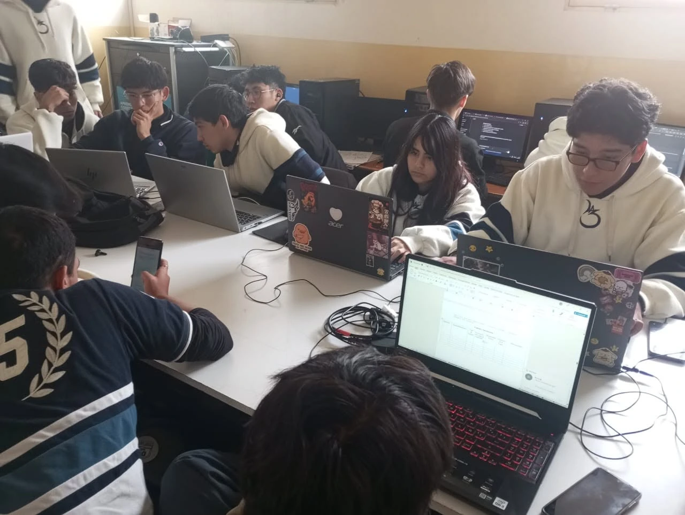
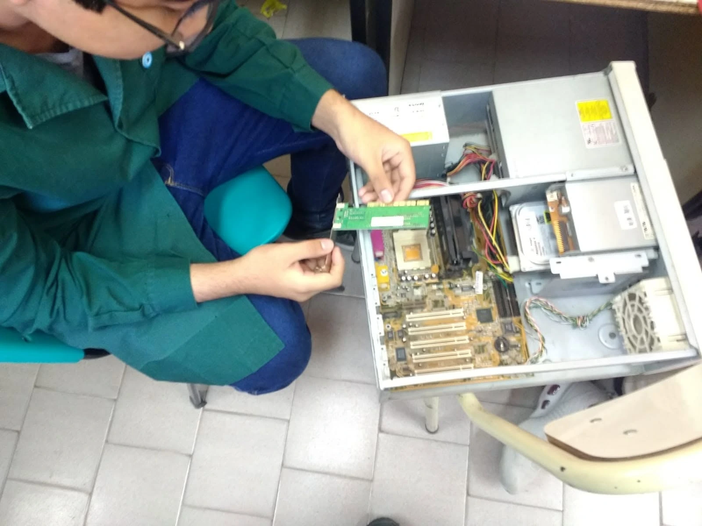
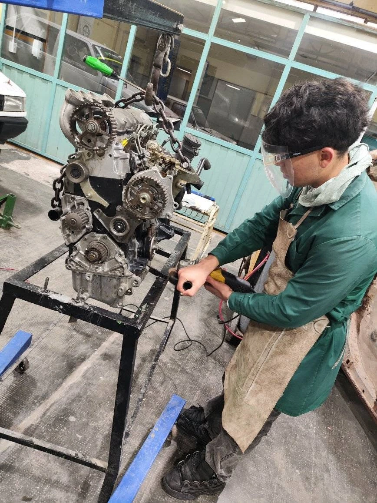
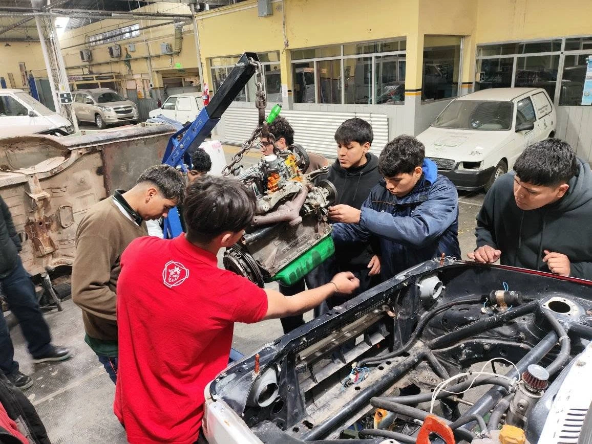

Nuestras Especialidades Técnicas
Conocé las dos ramas formativas de la E.E.T. N° 3139: planes de estudio, talleres prácticos y perfil del egresado.
El Ciclo Básico: Primeros Pasos y Talleres Generales
Antes de definir la orientación técnica, cada ingresante transita dos años comunes de exploración práctica. Durante este período, los alumnos rotan por áreas esenciales como carpintería, hojalatería, tornería, herrería, electricidad y electricidad del hogar. Acompañados de cerca por los profesores de cada sección, adquieren el dominio responsable de las herramientas de mano y maquinaria básica, asimilando desde el primer día las normas de seguridad e higiene del taller. A través de este trabajo práctico, el estudiante aplica lo aprendido construyendo sus propios proyectos para llevar a casa, adquiriendo oficios tangibles y forjando el criterio necesario para elegir con seguridad su orientación definitiva.
Informática
Entrar al área de informática de la técnica no es sentarse frente a una pantalla a ver teoría abstracta; es aprender a desarmar el mundo digital para entender cómo funciona desde sus cimientos. La experiencia comienza en el taller de electrónica: el olor a estaño, los componentes, el armado de una fuente de alimentación hecho por tus propias manos, la presentación del proyecto que se siente como una total innovación.
A medida que se avanza en los laboratorios, la lógica toma el protagonismo. No enseñamos simplemente a memorizar sintaxis o usar programas prefabricados: formamos la cabeza para resolver problemas reales mediante algoritmos, estructuras de datos y bases de datos. Desde configurar y cablear una red local para que decenas de terminales dialoguen de forma segura, hasta escribir las primeras líneas de código que automatizan una tarea compleja o dan vida a una aplicación funcional, el estudiante experimenta el impacto directo de lo que construye.


Conforme se avanza en el taller, los desafíos se multiplican: siempre hay un nuevo problema esperando en el banco de trabajo. Entre placas madre, testeo de fuentes y herramientas de medición, se vive la satisfacción única de diagnosticar por qué un equipo no encendía hasta devolverlo a la vida. Acá se pierde el miedo a abrir una máquina y se incorpora la disciplina del método técnico.
El verdadero valor de la especialidad se forja en el trabajo en equipo. Frente a un error de compilación o una falla en un servidor, los chicos aprenden a investigar, debatir soluciones y perseverar hasta encontrar la respuesta. Se egresa con la madurez técnica necesaria tanto para integrarse con solvencia en el mercado tecnológico actual como para encarar con ventaja cualquier carrera universitaria de ciencias exactas o ingeniería.
Automotor
Pisar el taller de automotor es entrar a un entorno donde la teoría cobra peso y forma tangible. Desde los primeros años, el estudiante convive con el sonido de los motores, el uso riguroso de las herramientas manuales y el respeto absoluto por las normas de seguridad. No se trata únicamente de ensuciarse las manos; se trata de comprender cada principio termodinámico y mecánico a través de la práctica directa: desarmar una caja de velocidades, interpretar el reglaje de válvulas o calibrar un micrómetro con exactitud milimétrica.
A medida que la formación madura, la tradición del ajuste mecánico se integra con la tecnología automotriz actual. El taller evoluciona hacia el diagnóstico computarizado: interpretar sensores en tiempo real con osciloscopio y scanner, decodificar mapas de inyección electrónica y analizar sistemas de seguridad activa como frenos ABS o control de tracción. El alumno deja de ser un mero ejecutor para convertirse en un profesional con criterio analítico, capaz de detectar una falla electromecánica compleja leyendo parámetros donde otros solo intentan adivinar.


A la par del motor, el aprendizaje abarca la totalidad del vehículo: la inspección de suspensiones, sistemas de dirección, frenos y el tendido de circuitos eléctricos. En cada práctica sobre unidades reales, los estudiantes colaboran en equipo para planificar el desarme, verificar tolerancias y seguir las hojas de servicio técnico. No es solo reparar: es entender cómo interactúa cada subsistema bajo exigencias reales de uso.
En los fosos y bancos de prueba se construye el verdadero carácter del técnico: la prolijidad, el orden en el puesto de trabajo y la responsabilidad sobre un vehículo que luego saldrá a circular. Se egresa con la seguridad de saber hacer, listo para responder tanto a las exigencias de un taller moderno o una concesionaria, como para afrontar con bases sólidas cualquier carrera de ingeniería mecánica o industrial.